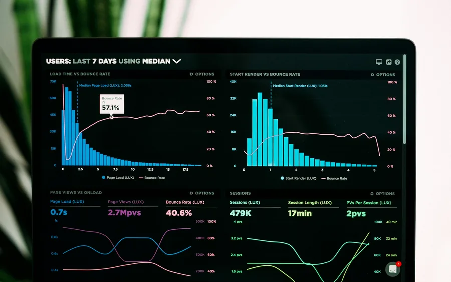

Was Sichtbarkeit auf die Zahlen bringt.
Weniger Zeit für Reporting. Mehr Zeit für Wachstum.
LEISTUNG 07/07
Alle Zahlen an einem Ort. Ohne Excel, ohne Monatsabschluss.

Vertrauen von:


 Skalieren zur Million
Skalieren zur Million
Skalieren zur Million
Skalieren zur Million
Skalieren zur Million
Skalieren zur Million
Kennzahlen liegen verteilt in DMS, Börsen, Buchhaltung und Excel. Das Zusammentragen ist Handarbeit.
Wenn die Auswertung fertig ist, ist die Entscheidung längst gefallen, oder das Quartal vorbei.
Bei mehreren Häusern gleicht der Durchschnitt genau das aus, was man sehen müsste.
… dann sind Sie nicht allein. Und Sie sind genau richtig hier.
DMS, Börsenportale, Buchhaltung, Excel. Das Cockpit entsteht als Ergebnis der anderen Bausteine, nicht als deren Voraussetzung.
Weniger Zeit für Reporting. Mehr Zeit für Wachstum.
DMS, Börsenportale, Werkstattplaner und Buchhaltung laufen zusammen, ohne dass jemand exportiert
Das lohnt sich, wenn Zahlen aus mehreren Systemen zusammengetragen werden und die Auswertung erst im Monatsabschluss kommt.
30 Minuten kostenloses Erstgespräch. Wir schauen gemeinsam, welche Kennzahl bei Ihnen heute zu spät kommt. Unverbindlich, ohne Bindung.